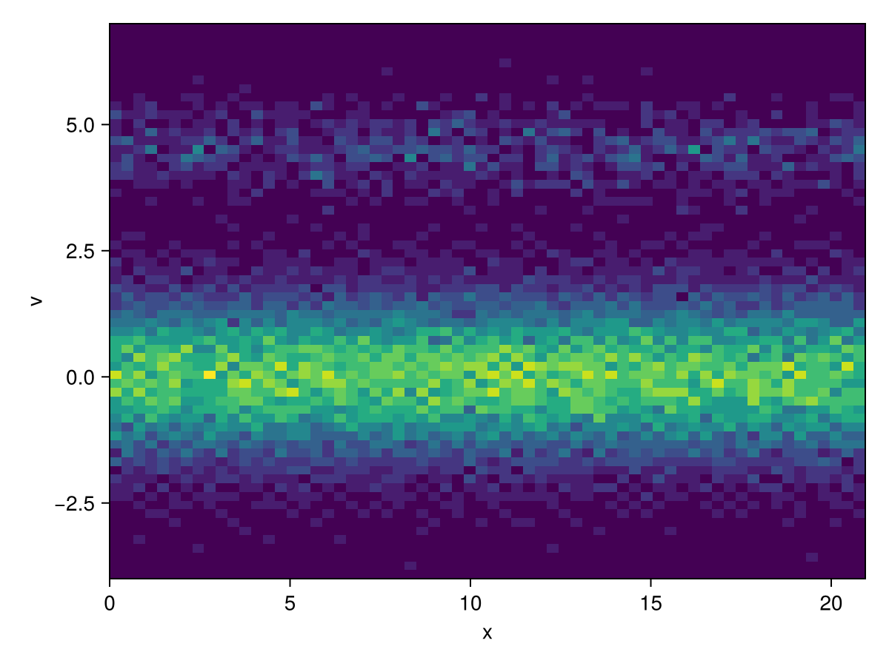

Initial conditions
An initial condition is a subtype of VlasovExample that holds the parameters of a distribution function. initialize! draws a particle sample of it into a ParticleDistribution and returns the distribution:
dist = initialize!(ParticleDistribution(xdim, vdim, npart), example)Every example sets the weights. Some draw the positions as well, and some leave them as they are.
The one-dimensional cases
These examples fill a 1D1V particle distribution. They serve the Vlasov–Poisson runs and the Lenard–Bernstein runs.
| example | positions | velocities | weights |
|---|---|---|---|
NormalDistribution(domain) | normal, rescaled into domain | standard normal, every component | $1/N$ |
ShiftedNormalV(domain, shift) | uniform on domain | normal of mean shift, first component | $1/N$ |
UniformDistribution(xdomain, vdomain) | uniform on xdomain | uniform on vdomain, every component | $1/N$ |
ShiftedUniformDistribution(xdomain, vdomain, shift) | uniform on xdomain | uniform on vdomain moved by shift, first component | $1/N$ |
DoubleMaxwellian(; domain, shift) | uniform on domain | half normal of mean +shift, half of mean -shift | $1/N$ |
SumMaxwellian(; mean_one, var_one, mean_two, var_two) | not written | half from each of two normals | $1/N$ |
Bump(; a, b) | not written | the smooth top hat on $[-b, b]$, accept–reject | $1/N$ |
BumpOnTail(; ε, κ, α, σ, v₀) | Sobol, accept–reject or importance sampling | bulk and tail by the inverse CDF | $L/N$ or $f_x(x) L/N$ |
The arguments in parentheses are positional, and those after a semicolon are keywords. Every argument has a default, which the docstring of the example states.
The draws use the global random number generator. Seed it with Random.seed! before a draw, so that a run can be repeated. The positions and the velocities are independent draws.
The bump-on-tail
The bump-on-tail is the initial condition of the reduced-order experiments,
\[f(x, v) = \bigl(1 - \varepsilon \cos(\kappa x)\bigr) \, \frac{1}{\sqrt{2\pi}} \left( (1 - \alpha) \, e^{-v^2/2} + \frac{\alpha}{\sigma} \, e^{-(v - v_0)^2 / (2\sigma^2)} \right) , \qquad x \in [0, 2\pi/\kappa) .\]
The defaults are ε = 0.03, κ = 0.3, α = 0.1, σ = 0.5 and v₀ = 4.5. The positions are drawn from a Sobol sequence. The default sampling method, AcceptRejectSampling(), accepts a position with the probability $f_x(x)/(1 + \varepsilon)$ and gives every particle the weight $L/N$ with $L = 2\pi/\kappa$. ImportanceSampling() accepts every position and gives it the weight $f_x(x) L / N$. Both sampling methods are internal types:
using Random
using VlasovMethods
Random.seed!(1234)
params = BumpOnTail()
accepted = initialize!(ParticleDistribution(1, 1, 10_000), params)
weighted = initialize!(ParticleDistribution(1, 1, 10_000), params,
VlasovMethods.ImportanceSampling())
(sum(accepted.particles.w), sum(weighted.particles.w), 2π / params.κ)(20.943951023930815, 20.943951023931927, 20.943951023931955)The accept–reject sample carries the total weight $\int f \, dx \, dv = L$ exactly. The weights of the importance sample sum to its Sobol quadrature of that integral, which is close to $L$.
using CairoMakie
CairoMakie.activate!(type = "png")
plot_distribution(accepted; xdomain = (0.0, 2π / params.κ), vdomain = (-4.0, 7.0),
nx = 64, nv = 64)
The two-dimensional reference cases
These examples fill the two velocity components of a particle distribution of vdim = 2. They are the three reference cases of the Landau operator. Each holds its own seed and draws from Random.MersenneTwister(seed), so a sample does not depend on the state of the global generator. None of them writes the positions.
| example | density | moments |
|---|---|---|
AnisotropicBiMaxwellian(σ1², σ2²) | a centred Gaussian of the variances σ1² and σ2² | the temperatures isotropise |
DoubleMaxwellian2D(; weights, variances, means) | the sum of two Gaussians | relaxes to the Maxwellian of the mixture |
BKWDistribution(t₀) | the BKW solution at the time t₀ | an exact solution at $\gamma = 0$ |
The constructors check their parameters. A variance that is not positive, or weights that do not sum to one, throw an ArgumentError, and a distribution of other than two velocity components throws a DimensionMismatch.
using VlasovMethods
dist = initialize!(ParticleDistribution(1, 2, 20_000), BKWDistribution(0.2))
v = dist.particles.v
(mean = sum(v; dims = 2) ./ size(v, 2), variance = sum(abs2, v; dims = 2) ./ size(v, 2))(mean = [0.01187731113698183; -0.008219903169097839;;], variance = [1.0029353738364302; 1.0039451878574392;;])The BKW profile has the mass one and the temperature one at every time, so the sample means are near zero and the sample variances near one.
Writing a new initial condition
A new initial condition is a subtype of VlasovExample with a method of initialize!:
struct MyExample <: VlasovMethods.VlasovExample
temperature::Float64
end
function VlasovMethods.initialize!(dist::ParticleDistribution, ex::MyExample,
::VlasovMethods.SamplingMethod = VlasovMethods.NoSampling())
npart = size(dist.particles.v, 2)
dist.particles.v .= sqrt(ex.temperature) .* randn(size(dist.particles.v))
dist.particles.w .= 1 / npart
return dist
end